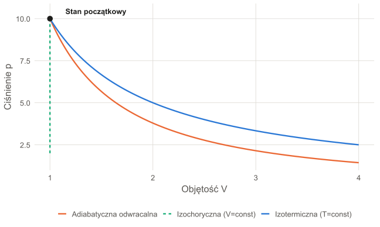
W1: Wprowadzenie do Termodynamiki Technicznej
Podstawowe Pojęcia, Układy, Równowaga i Procesy
prof. UPP dr hab. inż. Marek Urbaniak
Wydział Inżynierii Środowiska i Inżynierii Mechanicznej


Materiały z wykładów i ćwiczeń dostępne na platformie: elearning
Czym jest Termodynamika?
Definicja i Zakres
Termodynamika to dział fizyki zajmujący się badaniem termicznych właściwości układów makroskopowych.
Bada ona przemiany pomiędzy różnymi formami energii, przede wszystkim między ciepłem (\(Q\)) a pracą (\(L\)).
Termodynamika Techniczna w Inżynierii
- Obliczanie właściwości par: np. para wodna w turbinach.
- Analiza obiegów: silniki spalinowe, elektrownie.
- Urządzenia: sprężarki, pompy ciepła, chłodnictwo.
Innymi słowy…
To nauka o tym, jak zamienić chaos (ciepło) w użyteczne działanie (pracę).
Poziomy Opisu Układu
Makrostan vs. Mikrostan
Możemy patrzeć na układ z dwóch perspektyw:
Makrostan
- Opis za pomocą wielkości mierzalnych i uśrednionych.
- Zmienne: \(p, T, V, U\) (Parametry stanu).
- To podejście dominuje w inżynierii.
- To tzw. metoda fenomenologiczna
Mikrostan
- Opis stanu każdej pojedynczej cząstki.
- Pędy i położenia miliardów atomów.
- Wymaga metod statystycznych.
- To tzw. metoda statystyczna
Wniosek
Makrostan o największej liczbie odpowiadających mu mikrostanów \(\Omega\) jest najbardziej prawdopodobny i odpowiada stanowi równowagi (w układzie izolowanym).
Klasyfikacja Układów
Podział ze względu na wymianę z otoczeniem:
Izolowany
- Energia: ❌
- Materia: ❌
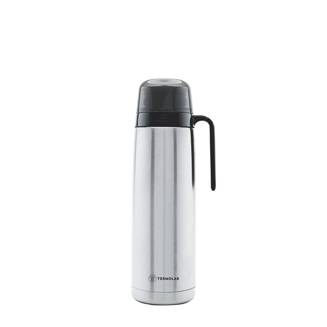
Zamknięty
- Energia: ✅
- Materia: ❌

Otwarty
- Energia: ✅
- Materia: ✅
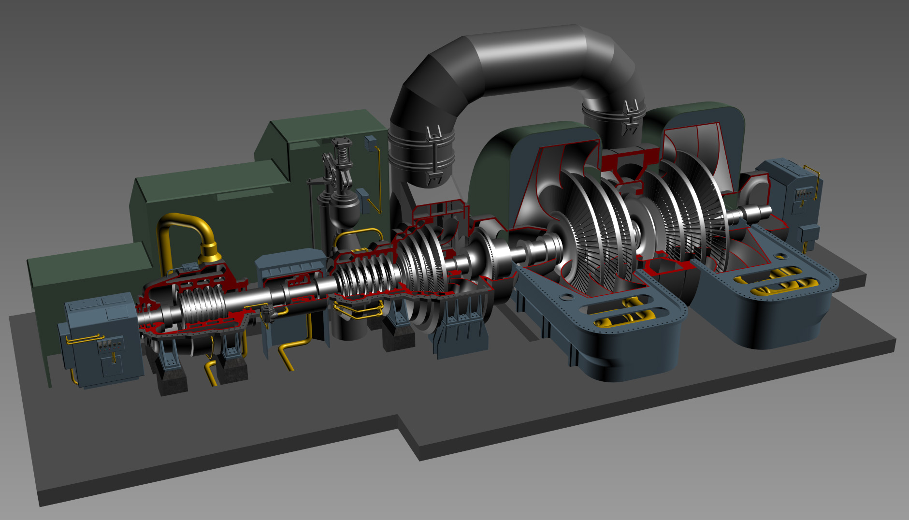
Dla układu izolowanego zmiana energii wewnętrznej jest zerowa: \(\Delta U = 0\)
Proces i Równowaga
Definicje Procesów
Proces (Przemiana Termodynamiczna):
- Zmiana stanu układu, w wyniku której zmienia się wartość co najmniej jednego z parametrów termodynamicznych.
Proces i Równowaga
Definicje Procesów
Obieg Termodynamiczny:
- Ciąg procesów, który prowadzi układ z powrotem do stanu początkowego.
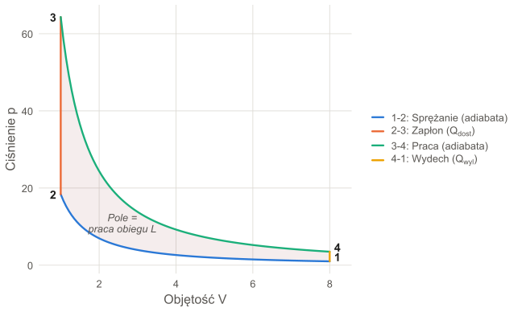
Proces i Równowaga
Stan Równowagi:
- Parametry nie zmieniają się w czasie i nie występują przepływy (ciepła, masy) – także po odizolowaniu układu od otoczenia.
- W obrębie każdej fazy parametry intensywne są jednorodne.
- Obejmuje równowagę termiczną, mechaniczną i chemiczną.
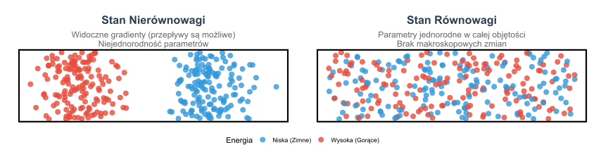
Proces Kwazistatyczny
Ideał Termodynamiki
Proces kwazistatyczny (równowagowy):
- Proces nieskończenie powolny – ciąg stanów nieskończenie bliskich równowagi termodynamicznej.
- Jest odwracalny: można go odwrócić przez nieskończenie małą zmianę parametrów układu i otoczenia.
Uwaga na tarcie
Nawet bardzo powolne sprężanie z tarciem tłoka nie jest procesem kwazistatycznym – tarcie rozprasza energię i proces jest nieodwracalny. Nie każdy proces powolny jest więc kwazistatyczny.
Znaczenie inżynierskie
Procesy kwazistatyczne są idealnym modelem porównawczym dla rzeczywistych (nieodwracalnych) maszyn cieplnych i chłodniczych.
Przykłady
Rozprężanie adiabatyczne bez tarcia; obiegi teoretyczne (Carnota, Otta, Diesla, Rankine’a) złożone z przemian kwazistatycznych.
Parametry Stanu
Podstawowe Wielkości Makroskopowe
Parametry Stanu: Wielkości, które opisują stan układu i są funkcjami stanu (ich zmiana zależy tylko od stanu początkowego i końcowego).
Ciśnienie (\(p\)), Temperatura (\(T\)), Objętość (\(V\)) lub Objętość właściwa (\(v\)).
- Wielkości Intensywne: Niezależne od rozmiaru (np. \(p, \ T, \ v\)).
- Wielkości Ekstensywne: Zależne od rozmiaru (np. \(V\), \(U\)).
Analogia dla różnic pomiędzy wielkościami Intensywną i Ekstensywną
Wyobraź sobie szklankę gorącej herbaty. Jeśli przelejesz połowę herbaty do drugiej, identycznej szklanki, to objętość i masa napoju w każdej szklance zmniejszą się o połowę (są to parametry ekstensywne). Jednak temperatura herbaty w obu naczyniach pozostanie dokładnie taka sama jak na początku, ponieważ nie zależy ona od ilości płynu (jest to parametr intensywny).
Zasada Zerowa Termodynamiki
Definicja Temperatury
Sformułowanie: Jeśli system A jest w równowadze termicznej z systemem B, a system A jest w równowadze termicznej z systemem C, to systemy B i C są w równowadze termicznej między sobą.
Konsekwencja
- Zasada zerowa jest logicznym fundamentem do zdefiniowania temperatury.
- Jeśli B i C mają tę samą temperaturę, to są w równowadze.
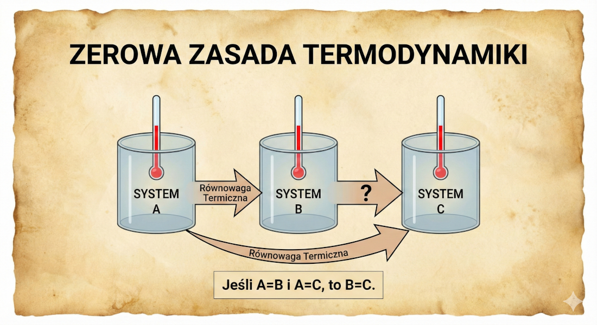
Prostym językiem
Dwa ciała znajdujące się w równowadze termicznej z trzecim ciałem są także w równowadze termicznej między sobą.
Energia układu jako funkcja stanu
Energia wewnętrzna układu jest jego immanentną cechą, zależną wyłącznie od parametrów określających aktualny stan systemu.
- Spadek energii układu adiabatycznego jest równy pracy wykonanej przez ten układ: \(U_1 - U_2 = L_{1-2}\)
Wniosek:
Energia jest funkcją stanu: jej zmiana nie zależy od drogi przemiany, a jedynie od stanu początkowego i końcowego. Praca i ciepło na każdej z dróg są natomiast inne.
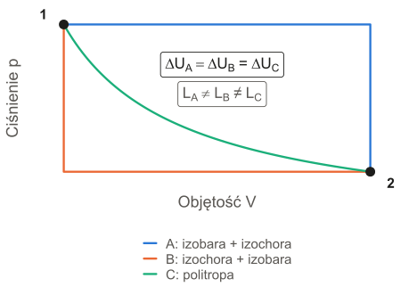
Praca i Ciepło: Formy przekazu energii
W przeciwieństwie do energii, praca (\(L\)) i ciepło (\(Q\)) nie są postaciami energii ani funkcjami stanu – to sposoby przekazywania energii przez granicę układu.
- Praca (\(L\)): oddziaływanie, którego jedynym skutkiem zewnętrznym mogłoby być podniesienie ciężaru.
- Ciepło (\(Q\)): przekazywanie energii wynikające wyłącznie z różnicy temperatur między układami.
Spostrzeżenie
“Praca i ciepło przestają istnieć z chwilą zakończenia zjawiska ich wykonywania lub przepływu. Pozostaje tylko skutek — zmieniona wartość energii ciał.”
Konwencja znaków (termodynamika techniczna): \(Q > 0\) – ciepło doprowadzone do układu; \(L > 0\) – praca wykonana przez układ.
Jednostki miary
W układzie SI podstawową jednostką pracy, ciepła i energii jest dżul (J).
- \(1 \text{ J} = 1 \text{ N} \cdot \text{m} = 1 \text{ W} \cdot \text{s}\)
- W technice często stosujemy wielokrotności: \(1 \text{ kJ} = 10^3 \text{ J}\), \(1 \text{ MJ} = 10^6 \text{ J}\).
- Jednostka pozaukładowa dopuszczona: kilowatogodzina (kWh).
- Jednostki dawne (niedopuszczone w UE, spotykane w starszej literaturze): kaloria, kilogramometr, koniogodzina.
| Jednostka | Wartość w SI |
|---|---|
| 1 kWh | 3,6 MJ |
| 1 kcal | 4,1868 kJ |
| 1 kG·m (kpm) | 9,80665 J |
| 1 KMh | 2,648 MJ |
Skąd 2,648 MJ?
\(1 \text{ KM} = 75 \text{ kG·m/s} = 735{,}5 \text{ W}\), więc \(1 \text{ KMh} = 735{,}5 \text{ W} \cdot 3600 \text{ s} \approx 2{,}648 \text{ MJ}\).
Temperatura i Skale
Konwersje Skal
W Termodynamice Technicznej i obliczeniach preferowana jest skala bezwzględna (Kelvina).
\[ T[K] = t[°C] + 273{,}15 \]
Konwersja na skalę Fahrenheita (\(t_F\)): \[ t_F = \frac{9}{5} t + 32; \space t = \frac{5}{9} (t_F - 32) \]
Konwersja na skalę Rankine’a [°R] (\(t_R\)): \[ t_R = t_F + 459{,}67; \space t_F = t_R - 459{,}67 \] \[ t_R = \frac{9}{5} T; \space T = \frac{5}{9} t_R \]
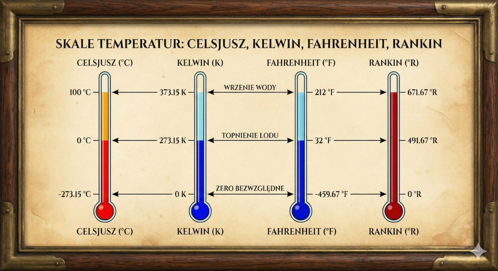
Ciśnienie i Energia Cząstek
Makroskopowe \(p\) a Mikroskopowe \(w\)
Ciśnienie makroskopowe (\(p\)) jest bezpośrednio związane z ruchami cząstek w mikroskali.
Równanie kinetyczne gazów:
Ciśnienie zależy od liczby cząstek \(N\), masy pojedynczej cząsteczki \(m\) i średniej kwadratu prędkości \(\overline{w^2}\).
\[ p V = \frac{1}{3} N m \overline{w^2} \]
Właściwości ciśnienia:
- W gazie jako całości rozkład prędkości jest izotropowy (taki sam w każdym kierunku).
- Ciśnienie to składowa normalna siły \(dF_n\) wywieranej przez cząstki na element powierzchni \(dA\): \[ p = \frac{dF_n}{dA} \]
Manometr U-rurkowy
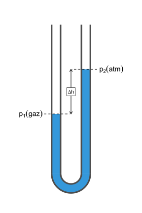
Proste urządzenie do pomiaru małych różnic ciśnień – różnica poziomów cieczy manometrycznej równoważy różnicę ciśnień:
\[ p_1 - p_2 = \Delta p = \rho_{\text{cieczy}} \cdot g \cdot \Delta h \]
Przykład: woda (\(\rho = 1000 \text{ kg/m}^3\)), \(\Delta h = 0{,}30 \text{ m}\): \(\Delta p = 1000 \cdot 9{,}81 \cdot 0{,}30 \approx 2{,}94 \text{ kPa} \approx 29{,}4 \text{ mbar}\).
Nadciśnienie i podciśnienie
Manometr mierzy różnicę względem otoczenia (\(p_{atm}\)). Ciśnienie absolutne: \(p_{abs} = p_{atm} + p_{man}\) (nadciśnienie) lub \(p_{abs} = p_{atm} - p_{vac}\) (podciśnienie).
Współczynniki Termiczne
Jak układy reagują na \(p\) i \(T\)?
1. Współczynnik Objętościowej Rozszerzalności Cieplnej
(\(\alpha\)): Mierzy względną zmianę objętości przy stałym ciśnieniu. \[ \alpha = \frac{1}{V} \left(\frac{\partial V}{\partial T}\right)_p \]
2. Współczynnik Prężności Cieplnej (\(\beta\)): Mierzy względną zmianę ciśnienia przy stałej objętości. \[ \beta = \frac{1}{p} \left(\frac{\partial p}{\partial T}\right)_v \]
3. Współczynnik Ściśliwości Izotermicznej
(\(\kappa_T\)): Mierzy względną zmianę objętości przy stałej temperaturze. \[ \kappa_T = -\frac{1}{V} \left(\frac{\partial V}{\partial p}\right)_T \]
Korelacja
Istnienie równania stanu implikuje, że wszystkie te trzy wielkości są ze sobą powiązane: \(\alpha = p \, \beta \, \kappa_T\).
Równanie Stanu
Funkcjonalny Związek
Równanie stanu to związek funkcyjny między parametrami stanu (\(p, V, T\)) dla układu będącego w równowadze termodynamicznej.
\[ f(p, V, T) = 0 \]
Cel
Umożliwia obliczenie brakującego parametru, gdy znane są pozostałe. Jest to punkt wyjścia dla analizy gazów.
Modele Gazu: Idealny vs. Rzeczywisty
Gaz doskonały – równanie Clapeyrona
Równanie stanu dla 1 mola gazu doskonałego (\(V_m\) – objętość molowa, \(R_u\) – uniwersalna stała gazowa): \[ \frac{pV_m}{R_u T} = 1 \]
Kiedy działa? Dla małych ciśnień i wysokich temperatur.
Ograniczenia: gazy rzeczywiste (He, N2, CH4, Ar) odbiegają od tego idealnego zachowania, szczególnie przy dużych ciśnieniach i niskich temperaturach.
Gaz rzeczywisty – równanie van der Waalsa
Równanie van der Waalsa koryguje model idealny, uwzględniając:
\[ \left(p + \frac{a}{V_m^2}\right) (V_m - b) = R_u T \]
Poprawki Fizyczne:
Objętość cząsteczek \(b\): Odejmujemy od objętości molowej \(V_m\) kowolumen – objętość niedostępną dla ruchu cząsteczek (ok. 4-krotność ich objętości własnej).
Oddziaływania \(a/V_m^2\): Dodajemy wewnętrzne ciśnienie wynikające z sił przyciągania między cząsteczkami. Poprawka ta uwzględnia fakt, że cząstki gazu rzeczywistego wzajemnie się przyciągają, co redukuje parcie na ścianki naczynia.
Implikacje Stanu Rzeczywistego
Stany Cieczy i Pary
Równanie van der Waalsa może dawać trzy różne objętości (\(V_1, V_2, V_3\)) dla stałych wartości \(p\) i \(T\).
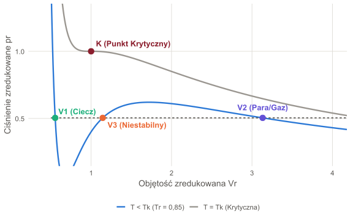
- \(V_1\): Objętość 1 mola cieczy nasyconej (przy \(p = p_s\)).
- \(V_2\): Objętość 1 mola pary nasyconej (przy \(p = p_s\)).
- \(V_3\): Rozwiązanie bez znaczenia fizycznego.
Punkt Krytyczny
(\(T_k\)): Wraz ze wzrostem temperatury \(T\), objętości cieczy (\(V_1\)) i pary (\(V_2\)) zbliżają się do siebie. W temperaturze krytycznej \(T_k\), odcinek \(V_1\)–\(V_2\) skraca się do zera: \(V_1 = V_2 = V_k\). Ten unikalny punkt (\(K\)) wyznacza koniec “kopuły nasycenia”.
Stany Metastabilne
Metastabilne (Nietrwałe) Stany Równowagi
Równanie stanu van der Waalsa opisuje stany nietrwałe, które w rzeczywistości można osiągnąć w specyficznych warunkach:
1. Para Przesycona: Izotermiczne sprężanie pary niezawierającej ośrodków kondensacji (pyłków, jonów).
2. Ciecz Przegrzana: Izotermiczne rozprężanie cieczy pozbawionej zanieczyszczeń.
Stany Metastabilne:
Są nietrwałe. Małe zaburzenie może spowodować gwałtowne skroplenie (para przesycona) lub wrzenie (ciecz przegrzana).
Przemiany Fazowe: wykresy \(p\)-\(T\)
Wykresy fazowe pokazują obszary w przestrzeni (\(p, T\)), w których substancja istnieje w danej fazie (stałej, ciekłej, gazowej lub ich równowadze).
Przykłady wykresów fazowych:
- Woda (anomalia: ujemne nachylenie krzywej topnienia – wzrost ciśnienia obniża temperaturę topnienia lodu).
- Hel-4 (posiadający linię \(\lambda\), która jest przejściem fazowym drugiego rodzaju do stanu nadciekłego).
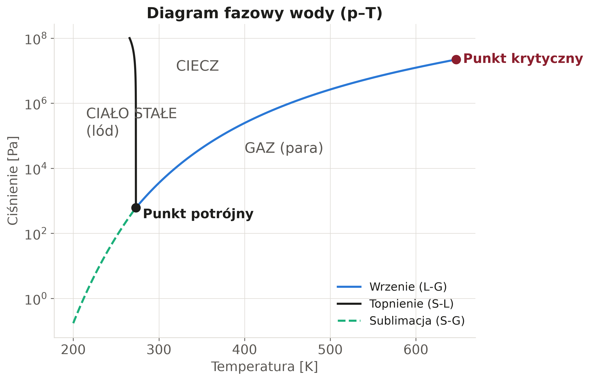
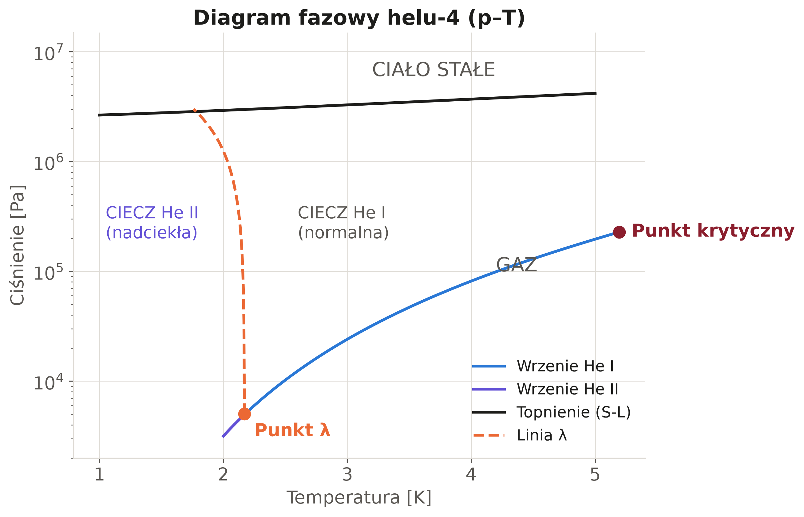
Pytania Kontrolne
Czy zamknięta puszka z napojem w lodówce to układ otwarty czy zamknięty?
Czy temperatura w \(^\circ C\) jest parametrem intensywnym czy ekstensywnym?
Jeśli manometr na oponie pokazuje 2,2 bara, a ciśnienie otoczenia to 1 bar, jakie jest ciśnienie absolutne w oponie?
Odp: \(2{,}2 + 1{,}0 = 3{,}2\) bara.
Dziękuję za uwagę!
Termodynamika Techniczna (W1)